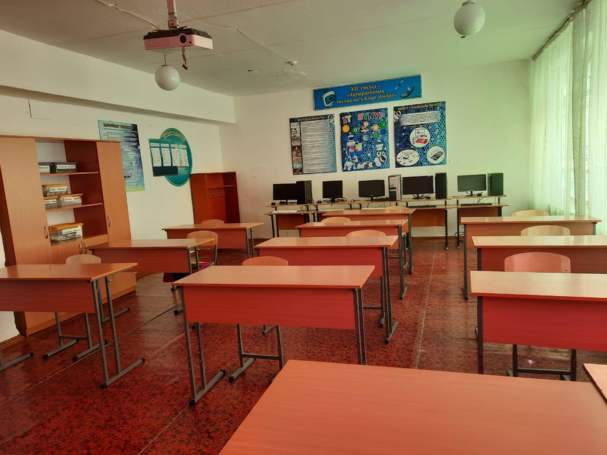
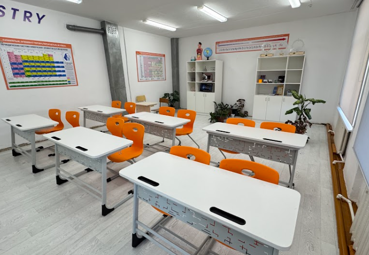

25 тамыз 2026 · Өткен іс-шара25 августа 2026 · Прошедшее событие
Auyl Bilim Talks
Ауыл педагогтерінің тәжірибе алмасу алаңы.Площадка для обмена опытом сельских педагогов.
ТолығырақПодробнее ↗Еліміздің әр түкпіріндегі оқушыларға сапалы білім беру үшін мектептерді заманауи жиһазбен, жаратылыстану зертханаларымен және цифрлық технологиямен толық жабдықтау. Чтобы обеспечить качественное образование в каждом уголке страны, мы полностью оснащаем школы современной мебелью, лабораториями естественных наук и цифровыми технологиями.
Ұстаздардың біліктілігін жетілдіру әрі тұрақты тәлімгерлік қолдау көрсету. Повышаем квалификацию педагогов и оказываем постоянную наставническую поддержку.
Жобаның сайтта жарияланған жиынтық көрсеткіштеріСводные показатели, опубликованные на сайте проекта
Педагогтердің пәндік және әдістемелік дағдыларын дамыту.Развитие предметных и методических навыков педагогов.
ТолығырақПодробнее ↗Оқуға және тәжірибе жасауға арналған заманауи орта.Современная среда для учёбы и экспериментов.
ТолығырақПодробнее ↗Мектеп пен мұғалімге тұрақты кәсіби қолдау.Постоянная профессиональная поддержка школ и учителей.
ТолығырақПодробнее ↗
Нақты өзгерісРеальные перемены
Жаңартылған кабинет — жаңа жиһаз ғана емес. Бұл оқушының тәжірибе жасап, зерттеп, білімін өмірде қолдануына арналған орта.Обновлённый кабинет — это среда, где школьники могут проводить опыты, исследовать и применять знания на практике.


Жобаның адамдарыЛюди проекта
«Ментор» деректі фильмі арқылы жобаға жақынырақ танысыңыз. Мектеп өмірі мен тәлімгерлік қолдауды фильмнен көріңіз.Познакомьтесь с проектом через документальный фильм «Ментор» — о школьной жизни и наставнической поддержке.
Барлық фильмдерВсе фильмы ↗Кездесу. Тәжірибе. Диалог.Встречи. Опыт. Диалог.

25 тамыз 2026 · Өткен іс-шара25 августа 2026 · Прошедшее событие
Ауыл педагогтерінің тәжірибе алмасу алаңы.Площадка для обмена опытом сельских педагогов.
ТолығырақПодробнее ↗
25 қыркүйек 2025 · Өткен іс-шара25 сентября 2025 · Прошедшее событие
Жүйелі қайырымдылық: тұрақтылық, серіктестік, мұра.Системная благотворительность: устойчивость, партнёрство, наследие.
ТолығырақПодробнее ↗
БАҚ-тағы жарияланымдарПубликации в СМИ
Жоба туралы жаңалықтар мен репортаждар.Новости и репортажи о проекте.
ТолығырақПодробнее ↗Ортақ мақсат біріктіредіНас объединяет общая цель
Жоба туралы сұрағыңыз бар ма? Бізге жазыңыз.Есть вопросы о проекте? Напишите нам.